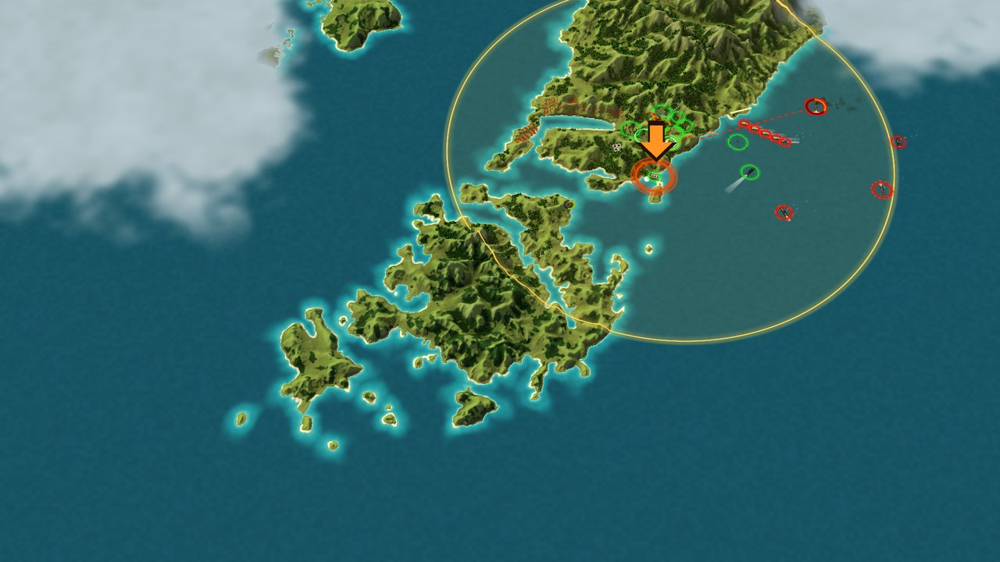
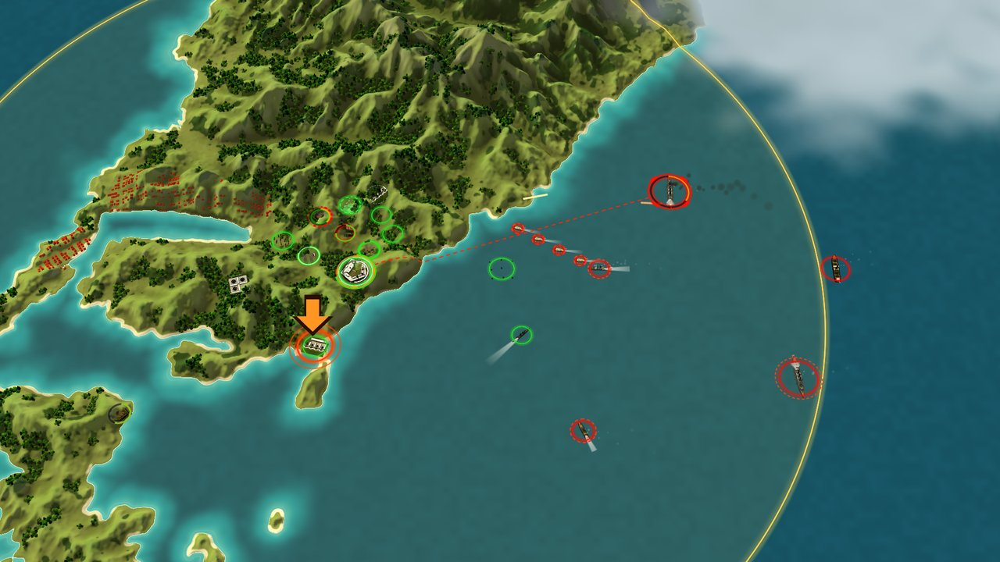

«Владивостокская крепость» — самая неторопливая наша игра: повествовательная стратегия про инженерного офицера, который сходит на берег в 1899 году и строит крепость на деньги, которыми не распоряжается. Она на месте, и в неё можно играть. Но на этой неделе мы открыли крепость заново, уже как игру другого рода. Мы делаем игры открыто, поэтому показываем её сейчас, раннюю и недоделанную. Играть пока не во что.
Десант, которого не было
Настоящую крепость один раз обстреляли с моря, в 1904 году, и ни разу не штурмовали. Рабочее название новой игры — «Десант», и её вопрос: что было бы в 1905-м, если бы кто-то попробовал. Вы командуете всей крепостью, на одной доске, всю осаду.
Из исследований ничего не выброшено. От старой игры остались настоящие укрепления, настоящий рельеф сопок, карты и офицеры. Новая доска построена по реальным данным высот полуострова и острова Русский.

Облик пришёл с одной картинки
Сначала мы думали о плоской штабной карте: горизонтали, карандашные стрелки, как видел бы офицер. От неё отказались в ту минуту, когда нашлась картинка лучше: раскрашенный рельефный макет, вид сверху. Зелёные сопки с мягкими тенями, светлые бетонные форты на вершинах, бирюзовое мелководье, которое уходит в тёмную морскую глубину, корабли с длинным следом. «Мне нравится этот стиль». Теперь это облик игры.
Первая альфа: «непонятно»
Первый вариант делил крепость на маленькие бои по участкам. Его отклонили одной фразой: «Она задумана как одно большое целое». Поэтому во втором варианте одна доска на всю крепость, а проигранный день переигрывается с утра.
В первой альфе у каждого укрепления была карточка с тремя положениями: укрыться, вести бой, вылазка. Противник обстреливает, штурмует или ведёт сапу, а вы отвечаете. На бумаге это чистые «камень, ножницы, бумага». В руках вышло так: укрепления сидели в укрытии, никто не стрелял, а игрок не понимал, что от него требуется. Его вердикт: «выглядит неплохо» и, про всё остальное, «непонятно», с крепким словом в придачу.
Мы спросили, что в такой игре должны делать руки: стрелять, строить, двигать войска или отдавать приказы. Он выбрал все четыре.

Вторая альфа: руки на карте
Карточек больше нет, а вторая альфа, собранная в тот же день, переносит всё на карту.
- Выберите форт или батарею и щёлкните правой кнопкой по кораблю: они откроют огонь.
- Тратьте припасы, чтобы поставить полевую батарею, мины, проволоку или окоп там, где, по-вашему, подойдут шлюпки.
- Двигайте батальоны, казаков и миноносцы.
- Приказывайте укреплению не стрелять, стрелять по готовности или уйти в укрытие.
- Первый день идёт с подсказками: девять шагов и указатель на карте, чтобы никто не сидел и не гадал, почему ничего не стреляет.

Снаряды, люди и время — три вещи, которых всегда не хватает. Эта часть замысла пережила обе альфы.
Что не решено
Почти всё. Вердикта по второй альфе ещё нет. Картинки на этой странице сняты в тестовой сцене, а не в готовом бою. Игра может снова поменять форму, и если поменяет, мы напишем об этом здесь. Если вы знаете крепость или просто любите игры, где береговая батарея что-то значит, напишите нам: contact@goldenharbourgames.com.